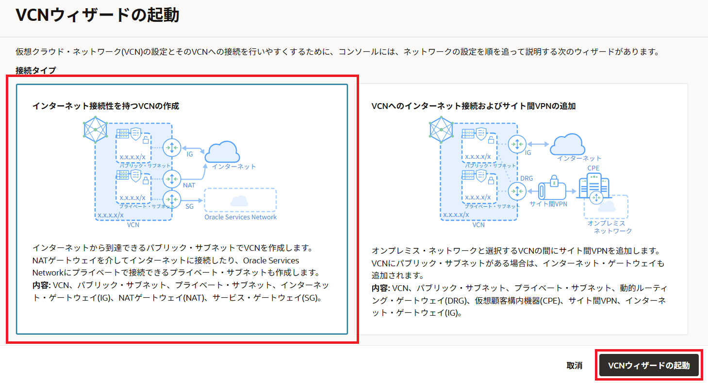
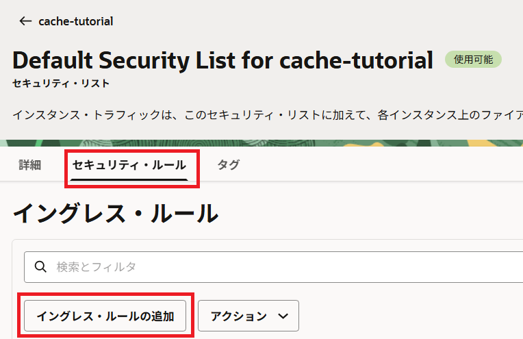
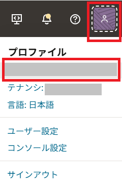
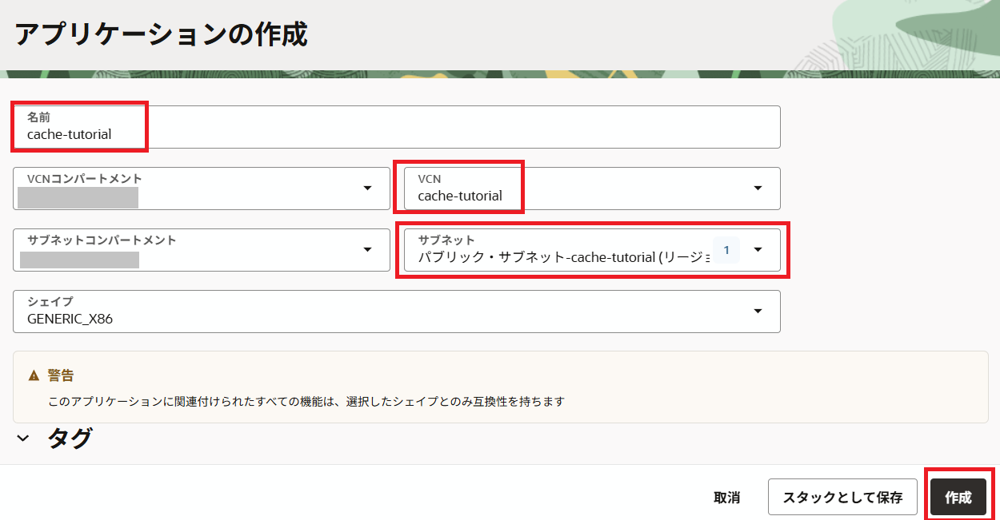
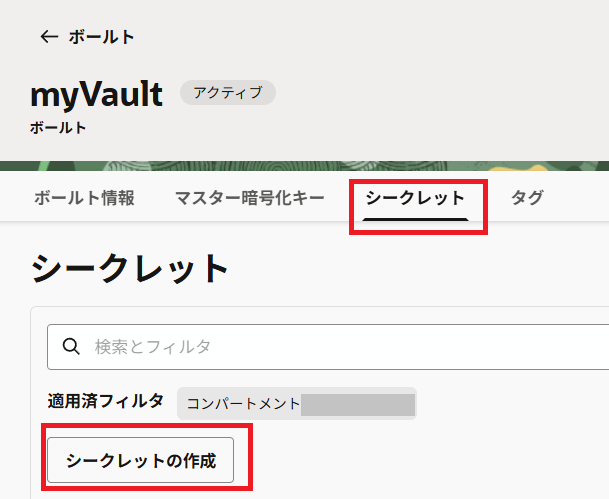

このチュートリアルでは、Oracleが提供するフルマネージドのRedisサービスであるOCI Cacheを使った、リクエストのキャッシングを体験していただけます。
1.前提条件
- クラウド環境
- Oracle Cloudのアカウント（Free Trial）を取得済みであること
2.概要
このチュートリアルでは、OCI Functionsに簡単なアプリケーションをデプロイし、そのAPIをAPI Gatewayで管理します。API Gatewayには「リクエストキャッシング」という機能があり、この機能を使うと、リクエストやレスポンスのデータを一時的に保存（キャッシング）できます。キャッシュにデータがあれば、それを使ってすぐに結果を返し、データがない場合にはアプリケーションから新たにデータを取得します。このキャッシュ機能には、OCI Cacheを使用します。
このチュートリアルで作成されるリソースは以下のようになります。
作成するリソースは、
- VCN
- OCI Cache
- OCIR
- OCI Functions
- Vault
- API Gateway
になります。ここから順にこれらのリソースを作成していきます。
3.必要なリソースの作成
3-1.VCNの作成
まずは今回のリソースを配置するVCN（仮想クラウドネットワーク）を作成します。OCIコンソールの左上のハンバーガーメニューから、「ネットワーキング」を選択し、「仮想クラウド・ネットワーク」を選択します。
今回は簡単にVCNを作成するため、「VCNウィザードの起動」を選択します。
VCNウィザードの起動ページで、「インターネット接続性を持つVCNの作成」が選択されていることを確認し、「VCNウィザードの起動」を選択します。

VCN名だけ任意の名前を入力して、後はデフォルトのまま作成します。ここではVCN名をcache-tutorialとします。
VCNの作成が完了したら、作成したVCNの詳細ページの左下にある、セキュリティ・リストを選択し、「Default Security List for xxx」を選択します。
「イングレスルールの追加」を選択します。

本チュートリアルではHTTPS通信を行うため、ポート443の通信を許可します。ソースCIDRにはすべてのIPを許可するために0.0.0.0/0を入力し、宛先ポート範囲は443とします。これらを入力したら、「イングレス・ルールの追加」を選択します。
以上でVCNの作成と準備は完了です。
3-2.OCI Cacheの作成
次に、OCI Cacheを作成します。画面左上のハンバーガーメニューから、「データベース」を選択し、「OCIキャッシュ」の中の「クラスタ」を選択します。
「クラスタの作成」を選択します。
任意の名前を入力して次に進みます。ここではcache-tutorialという名前にしています。
次に「ノード構成」のページが開きますが、ここはデフォルトで次に進みます。
「ネットワーキングの構成」ページでは、VCNは先ほど作成したVCNを選択し、サブネットはパブリックサブネットを選択します。
以降はすべてデフォルトのままクラスタの作成まで進めます。
クラスタの作成が完了したら、作成したクラスタの詳細ページからクラスタのエンドポイントを取得し、メモ帳等に控えておきます。
以上でOCI Cacheの作成は完了です。
3-3.OCIRの作成
次に、OCI Functionsにデプロイするアプリケーションのコンテナイメージを格納するための、コンテナリポジトリの作成を行います。画面左上のハンバーガーメニューから、「開発者サービス」を選択し、「コンテナ・レジストリ」を選択します。
「リポジトリの作成」を選択します。
リポジトリの作成ページが開いたら、「アクセス」を「パブリック」にし、「リポジトリ名」をcache-tutorialとします。
OCIRにアクセスするには、ユーザー名とパスワードが必要になります。OCIRではパスワードに認証トークンを利用しますので、認証トークンを作成しておきます。画面右上のユーザーアイコンを選択し、ご自身のプロフィール名を選択します。

画面左下のリソースメニューから、「認証トークン」を選択します。

「トークンの生成」を選択します。
トークンの生成ページが開いたら、適当な説明文を入力して、「トークンの生成」を選択します。
トークンが生成されたら、メモ帳等にコピーして控えておきます。
以上でOCIRの作成と準備は終了です。
3-4.OCI Functionsの作成
次に、アプリケーションをデプロイするOCI Functionsを作成します。画面左上のハンバーガーメニューから、「開発者サービス」を選択し、「ファンクション」の中の「アプリケーション」を選択します。
「アプリケーションの作成」を選択します。
アプリケーションの作成ページが開いたら、
- 名前：cache-tutorial
- VCN：先ほど作成したもの
- サブネット：パブリックサブネット
を選択し、「作成」を選択します。

Functionsを作成すると、下のような画面が表示されます。
そのまま下にスクロールしていくと、スタートガイドが書いてありますので、この手順を実施してアプリケーションをデプロイします。
なお、fn update context registryコマンドのrepo-name-prefixは先ほど作成したOCIRのリポジトリ名になります。
また、docker loginコマンドで求められるパスワードは、先ほど生成した認証トークンになります。
うまくログインできない場合
docker loginコマンドでうまくログインできない場合、認証トークンを作成する際にアクセスしたユーザーのプロファイル画面上部にあるユーザー名を、docker loginコマンドのユーザー名としてください。
3-5.Vaultの作成
次に、API Gatewayがキャッシュサーバーにアクセスする際のシークレットを保存するためのVaultを作成します。なお、2024年9月現在ではOCI Cacheはパスワード認証を行うことができないため、ここで作成するシークレットはダミーのデータになります。ダミーではありますが、API Gatewayの「レスポンスキャッシング」機能は、Vaultのシークレットの選択が必須となっているため本手順は必ず実施する必要があります。
画面左上のハンバーガーメニューから、「アイデンティティとセキュリティ」を選択し、「キー管理とシークレット管理」の中にある、「ボールト」を選択します。
「ボールトの作成」を選択します。
ボールトの作成ページが開いたら、任意の名前を入力します。ここではmyVaultとします。名前を入力したら、Vaultを作成します。
次に、Vaultのマスター暗号化キーを作成します。「キーの作成」を選択します。
キーの作成ページが開いたら、名前を入力します。ここではcache-tutorialとします。
次にシークレットを作成します。左下のリソース一覧から、「シークレット」を選択し、「シークレットの作成」を選択します。

シークレットの作成ページが開いたら、以下の項目を設定します。設定が完了したら、「シークレットの作成」を選択します。
- 名前：cache-tutorial
- 説明：for OCI Cache
- 暗号化キー：cache-tutorial
- 手動シークレット生成を選択
- シークレットタイプテンプレート：プレーン・テキスト
- シークレットコンテンツ：{“username”: “default”, “password”: “cache-tutorial”}
以上でVaultの設定は完了です。
3-6.API Gatewayの作成
最後に、API Gatewayの作成を行います。画面左上のハンバーガーメニューから、「開発者サービス」を選択し、「API管理」の「ゲートウェイ」を選択します。
「ゲートウェイの作成」を選択します。
ゲートウェイの作成ページでは、以下の項目を設定します。
- 名前：cache-tutorial
- タイプ：パブリック
- 仮想クラウドネットワーク：cache-tutorial
- サブネット：パブリックサブネット
- 拡張オプションの表示を選択
- レスポンスキャッシングの有効化を選択
- キャッシュ・サーバーのホスト：控えておいたOCI Cacheのエンドポイント
- キャッシュ・サーバーのポート: 6379
- ボールト：myVault
- ボールとシークレット：cache-tutorial
- キャッシュサーバーへの接続設定を選択
- リクエストのSSL/TLSを使用を選択
- SSL/TLS証明書の検証を選択
ここまで設定したら、作成を完了します。
次に、デプロイメントを作成します。画面左下のリソース一覧から、「デプロイメント」を選択し、「デプロイメントの作成」を選択します。
作成ページが開いたら、名前にcache-tutorial、パス接頭辞に/v1を入力します。入力が完了したら、「次」を選択します。
認証のページではデフォルトのまま次に進みます。
ルーティングのページでは、以下の項目を設定します。
- パス：/hello
- メソッド：GET
- バックエンドタイプ：Oracleファンクション
- アプリケーション：cache-tutorial
- 関数名：hello-java
- レスポンス・キャッシング・ポリシーを表示を選択
- このルートのキャッシングの有効化にチェック
- キャッシュされたレスポンスのTTLに120を入力
以上を設定したら、次に進んでそのまま作成します。
デプロイメントの詳細ページを開いたら、エンドポイントをコピーしてメモ帳等に控えておきます。
お疲れ様でした。以上でこのチュートリアルで必要なすべてのリソースを準備できました。
4.キャッシングを確認
ここからは、実際にキャッシングされているかどうかをCloud Shellを使って確認していきます。 Cloud Shellを開き、以下のコマンドを実行します。
curl --dump-header - <Endpoint>/hello
<Endpoint>には、デプロイメントの詳細ページで控えて置いたエンドポイントを入力します。コマンドの実行結果は以下のようになるかと思います。
HTTP/1.1 200 OK
Date: Thu, 05 Sep 2024 02:25:54 GMT
Content-Type: text/plain
Connection: keep-alive
Content-Length: 13
Server: Oracle API Gateway
X-Cache-Status: MISS
X-Content-Type-Options: nosniff
X-Frame-Options: sameorigin
X-XSS-Protection: 1; mode=block
Strict-Transport-Security: max-age=31536000
opc-request-id: /82C3A68C2887D582AC64D15AA313701E/8D52C50817DC55280F3E20CACC5FF8FE
この結果を見てみると、X-Cache-StatusがMISSになっていることが分かります。これは、初めての問い合わせなのでキャッシュサーバーにキャッシュが存在せず、ヒットしなかったことを表しています。
もう一度同じコマンドを実行してみます。すると、下記のような結果になります。
HTTP/1.1 200 OK
Date: Thu, 05 Sep 2024 02:25:58 GMT
Content-Type: text/plain
Transfer-Encoding: chunked
Connection: keep-alive
Server: Oracle API Gateway
X-Cache-Status: HIT
X-Content-Type-Options: nosniff
X-Frame-Options: sameorigin
X-XSS-Protection: 1; mode=block
Strict-Transport-Security: max-age=31536000
opc-request-id: /808F39D18EBE55D0B292765191C812A3/F587676E53648414BDD37AF11014DF42
今回はX-Cache-StatusがHITになりました。これは、初回の問い合わせ結果がキャッシュサーバーに保存されたため、今回の問い合わせはキャッシュサーバーから取得したことを表しています。
このように、API GatewayとOCI Cacheを使うことで比較的簡単にレスポンスのキャッシングを行うことができます。